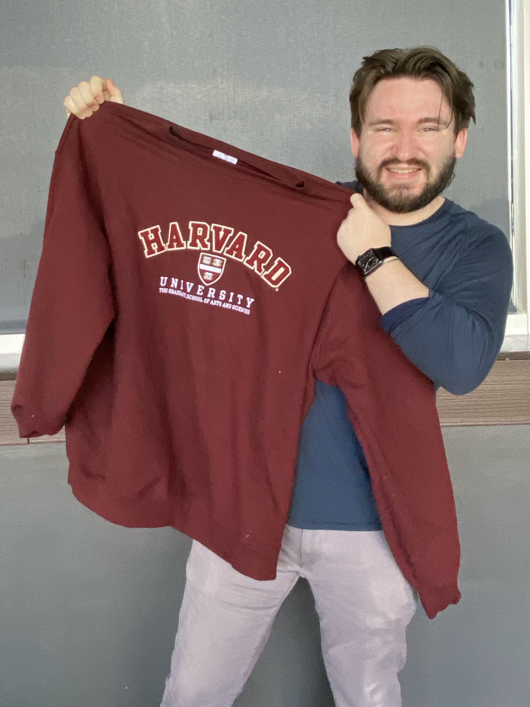

Welcome to the website of
Jack Sheehan
A PhD student at Harvard University studying planetary geophysics.


Welcome to the website of
A PhD student at Harvard University studying planetary geophysics.

I am a PhD candidate in the Department of Earth and Planetary Sciences at Harvard University, working with Dr. Rebecca Fischer. I am interested in the physics and consequences of impacts during the planetesimal and protoplanet stages.
Before coming to Harvard, I graduated with a BS in Geophysics and a BA in German Studies from Rice University. My undergraduate thesis investigated nano-scale earthquake analogs using machine learning, and was advised by Dr. Zhigang Peng at Georgia Tech through the IRIS Internship Program.
I will use this website to showcase my research with as little technical jargon as possible. I believe academic language is a significant barrier to accessible science, which is an issue I hope to combat throughout my career. This site embodies my desire to make research more appealing to those not actively studying it. If you have any questions or comments about my work or anything else, please reach out! Thank you for reading. :)
In Quis laudantium aut praesentium provident qui cumque fugit id soluta tenetur et cupiditate dolorum non rerum consequatur. Aut autem sed labore magnam qui mollitia error qui error magni. Vel nesciunt ducimus est modi labore et quae nostrum et accusamus unde et assumenda quasi? Qui excepturi voluptatem et minima dolor est sunt corporis eos placeat galisum eum architecto excepturi eum alias illo. In Quis laudantium aut praesentium provident qui cumque fugit id soluta tenetur et cupiditate dolorum non rerum consequatur. Aut autem sed labore magnam qui mollitia error qui error magni. Vel nesciunt ducimus est modi labore et quae nostrum et accusamus unde et assumenda quasi? Qui excepturi voluptatem et minima dolor est sunt corporis eos placeat galisum eum architecto excepturi eum alias illo. In Quis laudantium aut praesentium provident qui cumque fugit id soluta tenetur et cupiditate dolorum non rerum consequatur. Aut autem sed labore magnam qui mollitia error qui error magni. Vel nesciunt ducimus est modi labore et quae nostrum et accusamus unde et assumenda quasi? Qui excepturi voluptatem et minima dolor est sunt corporis eos placeat galisum eum architecto excepturi eum alias illo. In Quis laudantium aut praesentium provident qui cumque fugit id soluta tenetur et cupiditate dolorum non rerum consequatur. Aut autem sed labore magnam qui mollitia error qui error magni. Vel nesciunt ducimus est modi labore et quae nostrum et accusamus unde et assumenda quasi? Qui excepturi voluptatem et minima dolor est sunt corporis eos placeat galisum eum architecto excepturi eum alias illo. In Quis laudantium aut praesentium provident qui cumque fugit id soluta tenetur et cupiditate dolorum non rerum consequatur. Aut autem sed labore magnam qui mollitia error qui error magni. Vel nesciunt ducimus est modi labore et quae nostrum et accusamus unde et assumenda quasi? Qui excepturi voluptatem et minima dolor est sunt corporis eos placeat galisum eum architecto excepturi eum alias illo. In Quis laudantium aut praesentium provident qui cumque fugit id soluta tenetur et cupiditate dolorum non rerum consequatur. Aut autem sed labore magnam qui mollitia error qui error magni. Vel nesciunt s